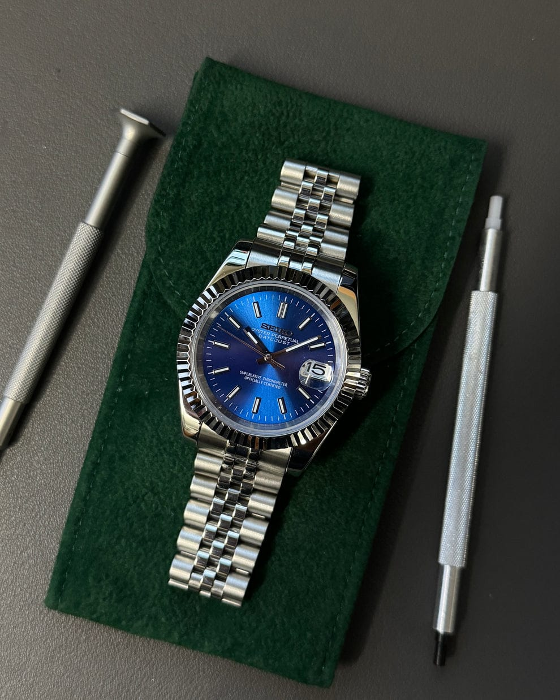
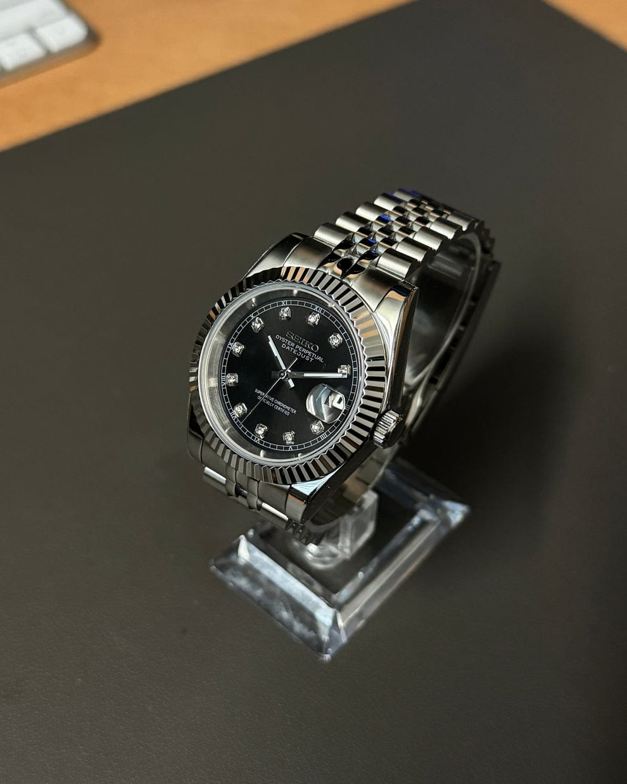
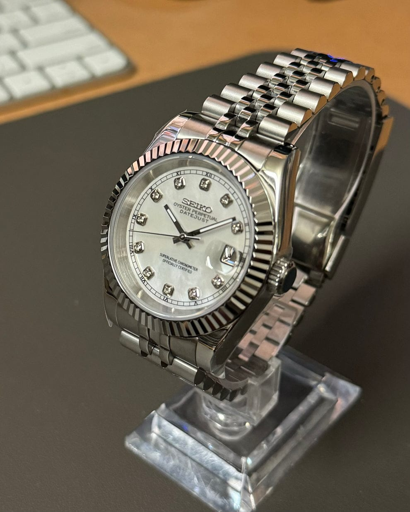

Satovi

Datejust Blue
Prečnik: 39mm, staklo: Safirno, narukvica: Čelik 904L, mehanizam: Seiko NH35 Automatski.

Datejust Black
Prečnik: 39mm, staklo: Safirno, narukvica: Čelik 904L, mehanizam: Seiko NH35 Automatski.

Datejust Light Blue
Prečnik: 39mm, staklo: Safirno, narukvica: Čelik 904L, mehanizam: Seiko NH35 Automatski.

Datejust White
Prečnik: 39mm, staklo: Safirno, narukvica: Čelik 904L, mehanizam: Seiko NH35 Automatski.

Nautilus Rose Gold
Prečnik: 39mm, staklo: Safirno, narukvica: Čelik 904L, mehanizam: Seiko NH35 Automatski.

Nautilus Black
Prečnik: 39mm, staklo: Safirno, narukvica: Čelik 904L, mehanizam: Seiko NH35 Automatski.

Nautilus Olive Green
Prečnik: 39mm, staklo: Safirno, narukvica: Čelik 904L, mehanizam: Seiko NH35 Automatski.

Nautilus Blue
Prečnik: 39mm, staklo: Safirno, narukvica: Čelik 904L, mehanizam: Seiko NH35 Automatski.

Nautilus Tiffany
Spoj japanske preciznosti i ručnog zanata. Svaki model je pažljivo sklopljen i testiran.

Daytona White
Mehanizam: VK63, staklo safirno - otporno na ogrebotine, kućište i narukvica od nerđajućeg čelika.

Daytona Black
Mehanizam: VK63, staklo safirno - otporno na ogrebotine, kućište i narukvica od nerđajućeg čelika.

Daytona Rose
Mehanizam: VK63, staklo safirno - otporno na ogrebotine, kućište i narukvica od nerđajućeg čelika.

Daytona Blue
Mehanizam: VK63, staklo safirno - otporno na ogrebotine, kućište i narukvica od nerđajućeg čelika.

Submariner Green
Mehanizam: NH35, 40mm, staklo otporno na ogrebotine, kućište i narukvica od nerđajućeg čelika.

Submariner Black
Mehanizam: NH35, 40mm, staklo otporno na ogrebotine, kućište i narukvica od nerđajućeg čelika.
Još modela možete da pogledate na našem Instagram profilu.
Poseti Profil